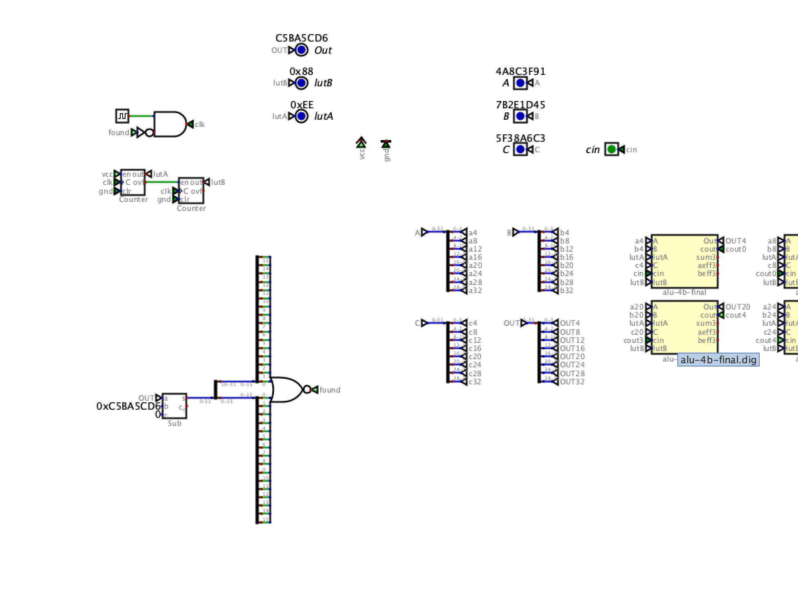
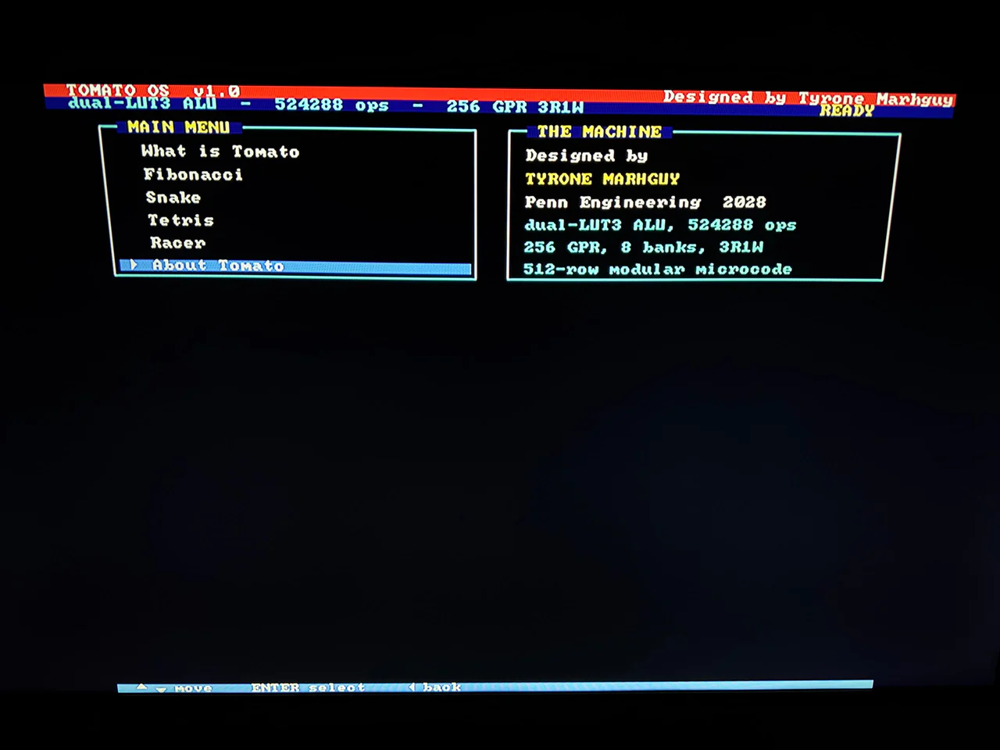

Dispatch · Bring-up
Do not build a throwaway FSM that becomes Tomato anyway
The ALU is routed. The lingering problem is what drives it — a minimal sequencer, or the rest of the machine while the fab runs.
The ALU is the hardest slice of the datapath — three-operand LUT3, carry select, the combinational core. To test it in isolation you need something to sequence operands, select microcode, and clock writeback. That means either a minimal custom FSM, or a control unit. A control unit is, by definition, Tomato. Both paths have the same trap.
The FSM option
A bare FSM can be kept simple: counter, a few mux selects, hard-wired vectors. Simple FSMs tend only to count. Useful for smoke tests, not for ISA behavior or multi-cycle sequences. A complex FSM that actually exercises LUT programs and multi-phase timing starts to duplicate the control unit — same ROM decode, same field fanout, same wiring problem already written down. Building that twice is double work. The design keeps drifting toward “just enough control to be Tomato” without the payoff of a runnable machine.

Fig. — Early FSMSmoke-test sequencer · or Tomato by another name
The peripherals option
Skip the interim FSM. Build the rest of the machine while the ALU goes to fab. The control boards already exist in simulation on main. Register file, memory bus, PC, mul-div — sequencing, decode fanout, 74xx glue. The ALU was the combinatorial monster. A PCB house can route and assemble it. That removes weeks of hand-wiring. The parallel window can go to slices that ship inside the final machine, not a sequencer that gets thrown away.
The lean recommendation that day: do not spend the fab wait on a throwaway FSM. Spend it on boards that remain.
From the build
The work behind the words.

Lot 07 on the bench during board testing.
{kind=link}

The menu running through the FPGA display path.